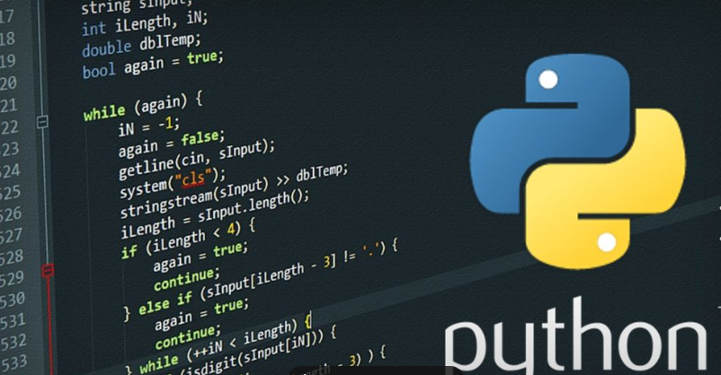

Saiba mais
E se você pudesse ser outra pessoa e estar em outro lugar?
Realidade virtual: entenda o que é e como funciona a tecnologia.

Saiba Mais
O sol vai morrer antes dos desenvolvedores de software?
A IA avançará cada vez mais no apoio à codificação realizada pelos desenvolvedores.

Clique aqui para saber mais
Python chega ao topo das linguagens de programação
O que isso revela sobre como o mundo está desenvolvendo software? 2025?
